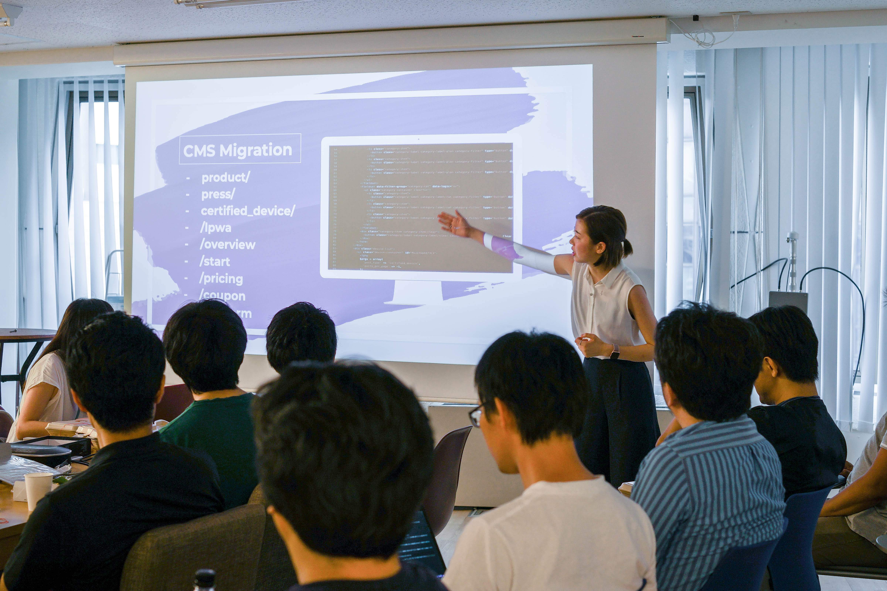

About Me

Hello!
I’m a Computer Engineering student at the University of Toronto, pursuing double minor in Artificial Intelligence and Business.
Who am I?
I am an avid learner who loves understanding the world and applying my knowledge and skills in a variety of fields. I am especially interested in IoT and ML, as well as in entrepreneurship. I want to keep growing as an individual and continue pushing my limits!
What do I do?
I have co-founded Shareable to help bring local communities through the EdTech platform. I also actively participate in extracurriculars to gain hands-on experience outside of classrooms and to enhance both soft and technical skills. I am passionate about inspiring other young females to pursue STEM!
Feel free to reach out to me - I am always open to chat!
Projects
StudySpace Finder
StudySpace Finder displays the density of people per study location at the University of Toronto St. George campus on an interactive map. The density of people per location is tracked by a “check-in and check-out” system inputted by the users. The density of a study location is communicated to the user by the marker size, colour, and a label that ranges from “Empty” to “Extremely packed.”
Tech stack utilized:
- Dash Ploty API
- Flask
- Python
M5Stack Weather Forecast
This displays the weather of any city in detail, including temperature, wind, pressure and humidity on the M5Stack hardware device
Tech stack utilized:
- M5 Stack
- OpenWeather API
- C++
TimeSync
Timesync is a web app that promotes doing activities together. Upon signing up, you can make daily to-do lists. Timesync is capable of connecting users that are doing similar activities within similar time frames. Once matches are found, users are connected through third-party social media platforms, such as Instagram.
Tech stack utilized:
- Python
- Flask
- SQLite
- SQLAlchemy
- HTML5
- CSS3
IoT Security Button
Developed an IoT security button with integrated SIM card functionality that sends an alert to your phone when the button has been activated
Tech stack utilized:
- AWS IoT Core
- IFTTT
- C++
- Wio-LTE
- Soracom Beam